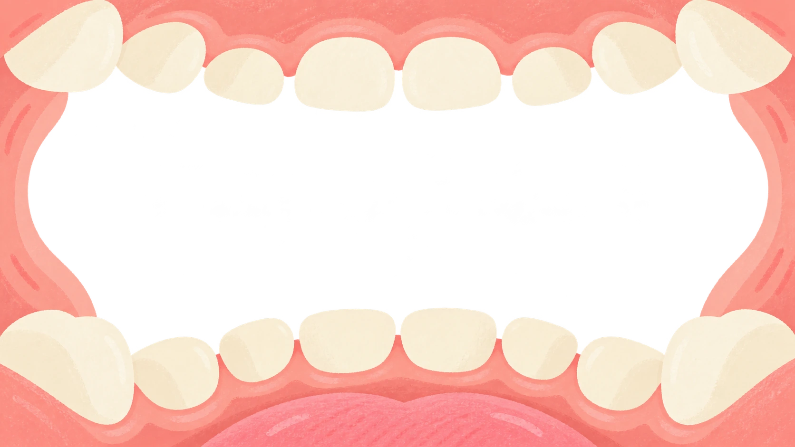

Осенняя прогулка
Вечерняя чистка
Не удалось сохранить чистки. Не закрывайте игру.
Настройки
Москва: день 06:00–18:00, вечер 18:00–06:00.
Зверята рады тебе!
Браузер не сохраняет угощения. Они останутся только до закрытия игры.

Готовы попробовать?0:32
Перед началом
Готовим щётку!
Немного воды
Моем щётку
Наносим пасту
Когда всё готово, начинаем!
Чистка закончена
Зубки чистые!
Сегодня ты получаешь угощение для своих зверят!
Полощем рот и моем зубную щётку.